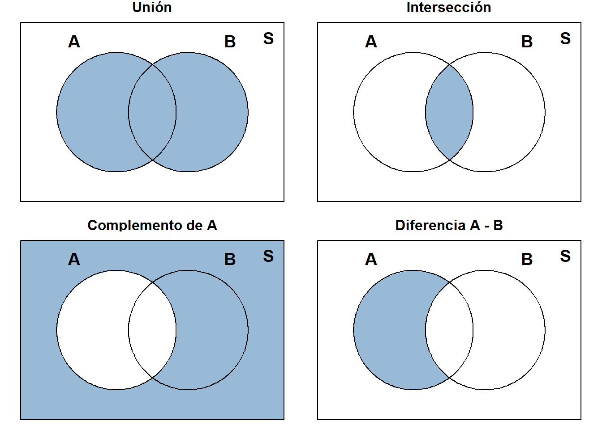
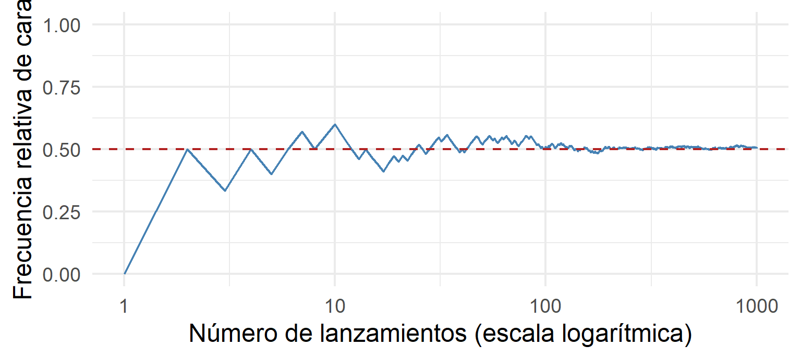
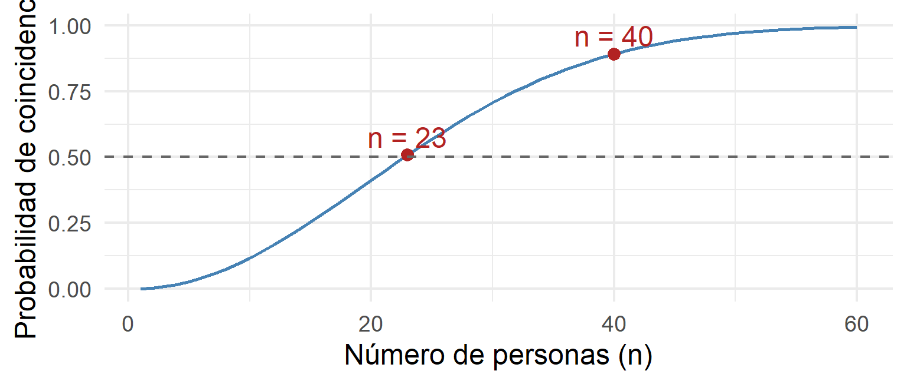
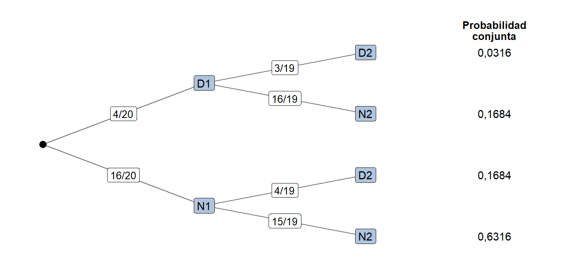
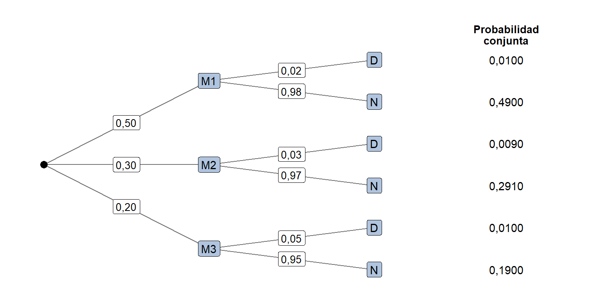
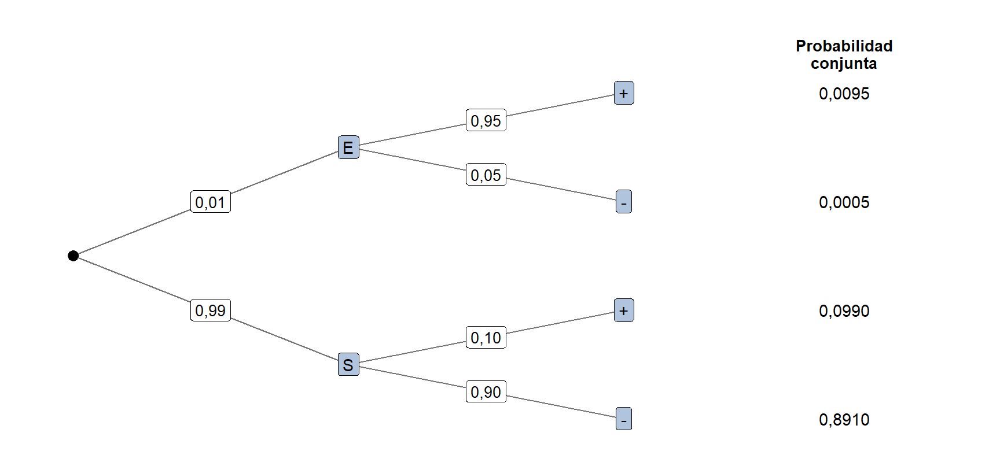

Capítulo 2: Teoría de la probabilidad
Estadística I
Fabio Humberto Sepúlveda Murillo
Escuela de Matemáticas · Universidad Industrial de Santander
Contenido
- Experimento aleatorio, espacio muestral y eventos
- Interpretaciones de la probabilidad
- Axiomas y reglas básicas
- Técnicas de conteo
- Probabilidad conjunta, marginal y condicional
- Eventos independientes
- Probabilidad total y teorema de Bayes
- Probabilidad con R
¿Qué es la teoría de la probabilidad?
La teoría de la probabilidad
Es el estudio de la incertidumbre y de la aleatoriedad. Proporciona las herramientas para cuantificar los posibles resultados de un experimento aleatorio.
- ¿Qué tan probable es que un lote de piezas tenga defectos?
- ¿Qué tan probable es que un cliente deje de pagar su crédito?
- ¿Qué tan probable es que un paciente con prueba positiva esté enfermo?
La probabilidad es el puente entre la estadística descriptiva y la inferencia (Estadística II).
Experimento aleatorio, espacio muestral y eventos
Experimento aleatorio
Un proceso que:
- puede repetirse en condiciones similares;
- tiene resultados posibles conocidos de antemano;
- no permite predecir con certeza cuál ocurrirá.
Sí son aleatorios
- Lanzar un dado.
- Inspeccionar tres piezas.
- Contar clientes en una hora.
- Medir la vida de un bombillo.
No es aleatorio
- El interés de un CDT a tasa fija: es determinístico.
Espacio muestral \(S\)
El conjunto de todos los resultados posibles.
| Experimento | Espacio muestral | Tipo |
|---|---|---|
| Lanzar un dado | \(\{1, 2, 3, 4, 5, 6\}\) | Finito |
| Inspeccionar 3 piezas | \(\{NNN, NND, \ldots, DDD\}\) (8 resultados) | Finito |
| Clientes en una hora | \(\{0, 1, 2, \ldots\}\) | Infinito numerable |
| Vida de un bombillo | \(\{t : t \ge 0\}\) | Continuo |
Finito e infinito numerable → discreto. Esta distinción reaparece en el capítulo 3 (variables discretas y continuas).
Eventos
Un evento es un subconjunto de \(S\). Ocurre si el resultado está en él.
Inspección de tres piezas:
- \(A\) = “al menos una defectuosa” \(= \{NND, NDN, DNN, NDD, DND, DDN, DDD\}\)
- \(B\) = “exactamente dos defectuosas” \(= \{NDD, DND, DDN\}\)
- Evento simple: un solo resultado, como \(\{DDD\}\).
- Evento seguro: \(S\). Evento imposible: \(\varnothing\).
Operaciones entre eventos
- Unión \(A \cup B\): ocurre \(A\) o \(B\) (o ambos).
- Intersección \(A \cap B\): ocurren ambos.
- Complemento \(A^c\): no ocurre \(A\).
- Diferencia \(A - B\): ocurre \(A\) pero no \(B\).
Leyes de De Morgan
\[ (A \cup B)^c = A^c \cap B^c \qquad\qquad (A \cap B)^c = A^c \cup B^c \]
“No ocurre ni \(A\) ni \(B\)” es lo mismo que “no ocurre \(A\) y no ocurre \(B\)”.
Eventos mutuamente excluyentes
\(A\) y \(B\) son mutuamente excluyentes si no pueden ocurrir a la vez: \[ A \cap B = \varnothing \]
Partición: \(B_1, \ldots, B_k\) mutuamente excluyentes y cuya unión es \(S\). Ejemplo: las tres sucursales de la pizzería.

Al lanzar un dado, ¿son excluyentes “par” y “mayor que 3”?
No: ambos ocurren si sale 4 o 6.
Interpretaciones de la probabilidad
Interpretación clásica
Si los \(n(S)\) resultados son igualmente probables: \[ P(A) = \frac{n(A)}{n(S)} = \frac{\text{casos favorables}}{\text{casos posibles}} \]
Dos dados: 36 resultados; suman 7 en \((1,6), (2,5), (3,4), (4,3), (5,2), (6,1)\): \[ P(\text{suma} = 7) = \frac{6}{36} = \frac{1}{6} \]
Limitación: ¿probabilidad de que una pizza tarde más de 40 minutos? No se puede contar.
Interpretación frecuentista
\[ P(A) = \lim_{n \to \infty} \frac{n_A}{n} \]

Pizzería: 228 de 1266 entregas tardaron más de 40 min → \(P \approx 0{,}180\).
Interpretación subjetiva
Para situaciones que no se repiten:
- ¿Terminará a tiempo esta obra?
- ¿Sobrevivirá esta empresa sus primeros cinco años?
- ¿Superará la inflación la meta del Banco de la República?
La probabilidad expresa un grado de creencia razonado.
Tres interpretaciones, unas mismas reglas
Todas obedecen los mismos axiomas.
Axiomas y reglas básicas
Axiomas de Kolmogórov
- \(P(A) \ge 0\) para todo evento \(A\).
- \(P(S) = 1\).
- Si \(A_1, A_2, \ldots\) son mutuamente excluyentes: \[ P(A_1 \cup A_2 \cup \cdots) = P(A_1) + P(A_2) + \cdots \]
Consecuencias:
- \(P(\varnothing) = 0\) y \(0 \le P(A) \le 1\).
- Si \(A \subseteq B\), entonces \(P(A) \le P(B)\).
- Complemento: \(P(A^c) = 1 - P(A)\).
- Regla de la suma: \(P(A \cup B) = P(A) + P(B) - P(A \cap B)\).
¿Por qué se resta la intersección?
Al sumar \(P(A) + P(B)\), la intersección \(A \cap B\) se cuenta dos veces.
Ejemplo: 45 % cursa Cálculo (\(C\)), 30 % Física (\(F\)), 15 % ambas.
- Al menos una: \(P(C \cup F) = 0{,}45 + 0{,}30 - 0{,}15 = 0{,}60\)
- Ninguna: \(P\big((C \cup F)^c\big) = 1 - 0{,}60 = 0{,}40\)
- Solo Cálculo: \(P(C) - P(C \cap F) = 0{,}45 - 0{,}15 = 0{,}30\)
El truco del complemento
“Al menos uno” → calcule “ninguno” y réstelo de 1.
Técnicas de conteo
Principio multiplicativo
\(k\) etapas con \(n_1, n_2, \ldots, n_k\) opciones → \(n_1 \times n_2 \times \cdots \times n_k\) formas.
- Placas con 3 letras y 3 dígitos: \(26^3 \times 10^3 = 17\,576\,000\)
- Clave de 4 dígitos: \(10^4 = 10\,000\)
- Tres piezas, defectuosa o no: \(2^3 = 8\)
Permutaciones: el orden importa
\[ {}_{n}P_{r} = \frac{n!}{(n-r)!} \qquad\qquad n! = n \times (n-1) \times \cdots \times 1, \quad 0! = 1 \]
- Presidente, vicepresidente y secretario entre 10 estudiantes: \({}_{10}P_{3} = 10 \times 9 \times 8 = 720\).
- Con objetos repetidos: \(\dfrac{n!}{n_1!\,n_2! \cdots n_k!}\). ESTADISTICA: \(\dfrac{11!}{2!\,2!\,2!\,2!} = 2\,494\,800\).
Combinaciones: el orden no importa
\[ {}_{n}C_{r} = \binom{n}{r} = \frac{n!}{r!\,(n-r)!} \qquad\qquad {}_{n}P_{r} = r! \cdot {}_{n}C_{r} \]
- Comité de 3 entre 10: \({}_{10}C_{3} = 120\).
- Lotería de 6 números entre 45: \({}_{45}C_{6} = 8\,145\,060\).
Conteo y probabilidad
Lote de 20 piezas, 4 defectuosas. Se eligen 3 al azar, sin reemplazo.
\[ P(\text{ninguna defectuosa}) = \frac{{}_{16}C_{3}}{{}_{20}C_{3}} = \frac{560}{1140} \approx 0{,}491 \]
\[ P(\text{exactamente una}) = \frac{{}_{4}C_{1} \cdot {}_{16}C_{2}}{{}_{20}C_{3}} = \frac{4 \times 120}{1140} \approx 0{,}421 \]
Al menos una: \(1 - 0{,}491 = 0{,}509\). (Capítulo 3: distribución hipergeométrica).
El problema del cumpleaños
¿Cuántas personas se necesitan para que sea más probable que no que dos cumplan años el mismo día?
\[ P(\text{al menos dos coinciden}) = 1 - \frac{365 \times 364 \times \cdots \times (365 - n + 1)}{365^n} \]

Solo 23. Con 40 personas: 0,891.
¿Qué técnica usar?
| Situación | ¿Orden? | ¿Repetición? | Número de formas |
|---|---|---|---|
| Etapas sucesivas | — | — | \(n_1 \times n_2 \times \cdots \times n_k\) |
| Ordenar \(n\) objetos | Sí | No | \(n!\) |
| Elegir \(r\) de \(n\) en orden | Sí | No | \({}_{n}P_{r}\) |
| Elegir \(r\) de \(n\) con reemplazo | Sí | Sí | \(n^r\) |
| Objetos con grupos iguales | Sí | Iguales | \(n!/(n_1!\cdots n_k!)\) |
| Elegir \(r\) de \(n\) sin orden | No | No | \({}_{n}C_{r}\) |
Probabilidad conjunta, marginal y condicional
Tabla de contingencia general
\(n\) elementos clasificados según dos características:
| \(A \backslash B\) | \(B_1\) | \(B_2\) | \(\cdots\) | \(B_k\) | Total |
|---|---|---|---|---|---|
| \(A_1\) | \(f_{11}\) | \(f_{12}\) | \(\cdots\) | \(f_{1k}\) | \(f_{1\cdot}\) |
| \(A_2\) | \(f_{21}\) | \(f_{22}\) | \(\cdots\) | \(f_{2k}\) | \(f_{2\cdot}\) |
| \(\vdots\) | \(\vdots\) | \(\vdots\) | \(\vdots\) | \(\vdots\) | |
| \(A_m\) | \(f_{m1}\) | \(f_{m2}\) | \(\cdots\) | \(f_{mk}\) | \(f_{m\cdot}\) |
| Total | \(f_{\cdot 1}\) | \(f_{\cdot 2}\) | \(\cdots\) | \(f_{\cdot k}\) | \(n\) |
Se elige un elemento al azar.
Tres preguntas, tres probabilidades
- ¿Tiene \(A_i\) y \(B_j\)? \(\qquad P(A_i \cap B_j) = \dfrac{f_{ij}}{n}\) → conjunta
- ¿Tiene \(A_i\)? \(\qquad P(A_i) = \dfrac{f_{i\cdot}}{n} = \displaystyle\sum_{j} P(A_i \cap B_j)\) → marginal
- ¿Tiene \(A_i\), si se sabe que tiene \(B_j\)? \(\qquad P(A_i \mid B_j) = \dfrac{P(A_i \cap B_j)}{P(B_j)} = \dfrac{f_{ij}}{f_{\cdot j}}\) → condicional
Saber que ocurrió \(B_j\) reduce el espacio muestral a la columna \(j\).
Probabilidad condicional
\[ P(A \mid B) = \frac{P(A \cap B)}{P(B)}, \qquad P(B) > 0 \]
Cuidado
\(P(A \mid B) \neq P(B \mid A)\) en general. La primera divide entre \(P(B)\); la segunda, entre \(P(A)\).
Ejemplo: fumar y género
| \(H\) | \(M\) | Total | |
|---|---|---|---|
| \(F\) | 65 | 58 | 123 |
| \(F^c\) | 43 | 67 | 110 |
| Total | 108 | 125 | 233 |
- Conjunta: \(P(F \cap H) = \frac{65}{233} \approx 0{,}279\)
- Marginal: \(P(F) = \frac{123}{233} \approx 0{,}528\)
- \(P(F \mid H) = \frac{65}{108} \approx 0{,}602\)
- \(P(F \mid M) = \frac{58}{125} = 0{,}464\)
- \(P(H \mid F) = \frac{65}{123} \approx 0{,}528\)
Pizzería: de 229 clientes con derecho al vino, 188 lo recibieron: \(P(R \mid V) = 188/229 \approx 0{,}821\).
Regla de la multiplicación
\[ P(A \cap B) = P(B)\,P(A \mid B) = P(A)\,P(B \mid A) \]
Dos piezas sin reemplazo de un lote de 20 con 4 defectuosas:

\(P(D_1 \cap D_2) = \frac{4}{20} \times \frac{3}{19} \approx 0{,}0316\)
Eventos independientes
Independencia
\(A\) y \(B\) son independientes si saber uno no cambia la probabilidad del otro: \[ P(A \mid B) = P(A) \quad \Longleftrightarrow \quad P(A \cap B) = P(A)\,P(B) \]
- Dos dados: \(P(\text{dos seises}) = \frac{1}{6} \times \frac{1}{6} = \frac{1}{36}\).
- Fumar y género: \(P(F)\,P(H) \approx 0{,}245 \neq P(F \cap H) = 0{,}279\) → dependientes.
- Sin reemplazo → dependientes; con reemplazo → independientes.
Independientes ≠ excluyentes
Si \(A\) y \(B\) son mutuamente excluyentes (con probabilidad positiva):
- saber que ocurrió \(A\) dice que no ocurrió \(B\);
- \(P(B \mid A) = 0 \neq P(B)\).
Conclusión
Dos eventos mutuamente excluyentes con probabilidad positiva siempre son dependientes.
Confiabilidad de sistemas
Dos componentes independientes, cada uno funciona con probabilidad 0,95.
En serie
Funciona si funcionan ambos: \[ 0{,}95 \times 0{,}95 = 0{,}9025 \]
En paralelo
Falla solo si fallan ambos: \[ 1 - 0{,}05 \times 0{,}05 = 0{,}9975 \]
Por eso los sistemas críticos tienen componentes redundantes.
Probabilidad total y teorema de Bayes
Teorema de la probabilidad total
Si \(B_1, \ldots, B_k\) forman una partición: \[ P(A) = \sum_{i=1}^{k} P(B_i)\,P(A \mid B_i) \]
Máquinas \(M_1, M_2, M_3\) producen el 50 %, 30 % y 20 %, con 2 %, 3 % y 5 % de defectos:

\(P(D) = 0{,}010 + 0{,}009 + 0{,}010 = 0{,}029\)
Teorema de Bayes
\[ P(B_j \mid A) = \frac{P(B_j)\,P(A \mid B_j)}{\sum_{i=1}^{k} P(B_i)\,P(A \mid B_i)} \]
- \(P(B_j)\): probabilidad a priori
- \(P(A \mid B_j)\): verosimilitud
- \(P(B_j \mid A)\): probabilidad a posteriori
Si la pieza es defectuosa: \[ P(M_3 \mid D) = \frac{0{,}010}{0{,}029} \approx 0{,}345 \] Antes era 0,20: \(M_3\) produce la quinta parte, pero más de un tercio de los defectos.
Una prueba diagnóstica
- La enfermedad afecta al 1 % de la población.
- Sensibilidad 95 %: da positivo en el 95 % de los enfermos.
- Especificidad 90 %: da negativo en el 90 % de los sanos.
Una persona da positivo. ¿Qué tan probable es que esté enferma?
Pregunta para el grupo
¿95 %? ¿90 %? ¿50 %? Antes de calcular, ¡haga su apuesta!
La respuesta
\[ P(E \mid +) = \frac{0{,}01 \times 0{,}95}{0{,}01 \times 0{,}95 + 0{,}99 \times 0{,}10} = \frac{0{,}0095}{0{,}1085} \approx 0{,}088 \]
Solo el 8,8 %. Con frecuencias, de cada 10 000 personas:
- 100 enfermas → 95 positivos.
- 9900 sanas → 990 positivos falsos.
- Positivos: \(95 + 990 = 1085\), de los cuales solo 95 están enfermos.
El árbol de la prueba

\(P(+ \mid E) = 0{,}95\) es muy distinto de \(P(E \mid +) = 0{,}088\).
Probabilidad con R
Simular con sample()
[1] 3 6 3 2 2 6 3 5 4 6[1] "Sello" "Cara" "Sello" "Cara" "Sello"[1] 5 27 28 9 29 35set.seed() fija la semilla para que los resultados se puedan reproducir.
Estimar probabilidades por simulación
Bayes con vectores
Para practicar
- Los 24 ejercicios del capítulo están en los apuntes.
- Incluyen contextos de empleo, riesgo crediticio, filtros de spam, sistemas de bombeo y la base de la pizzería.
Referencias
Estadística I · UIS